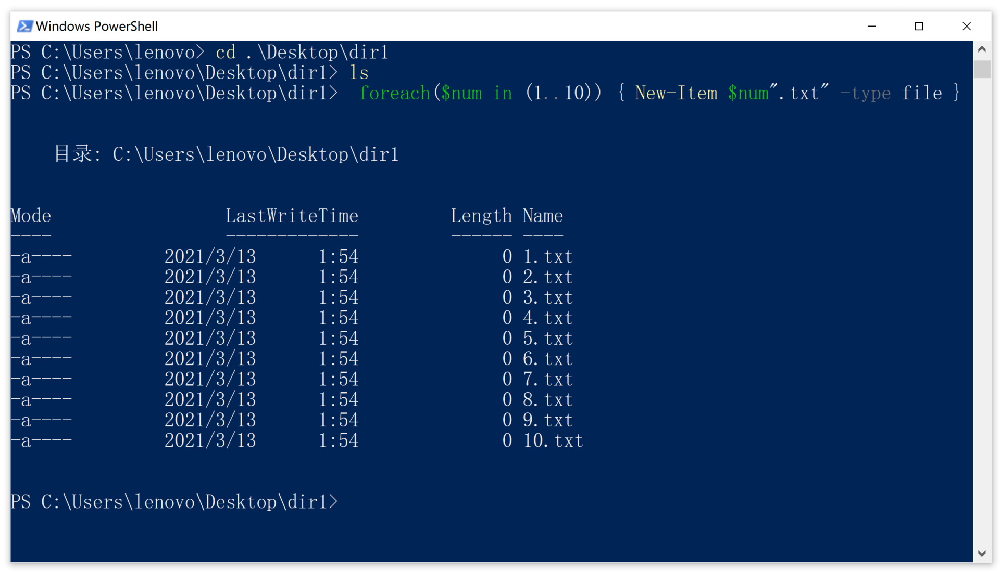
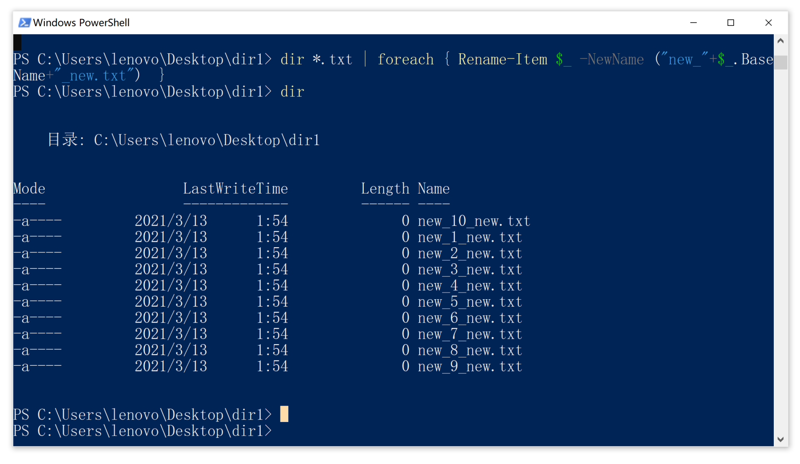
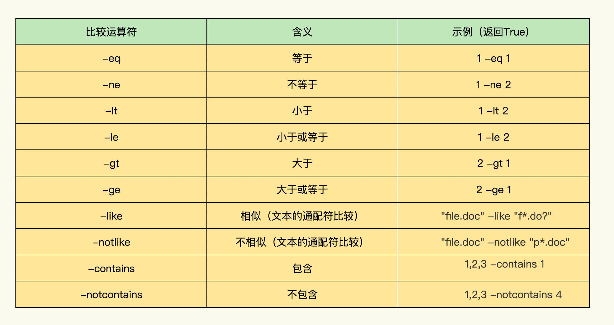
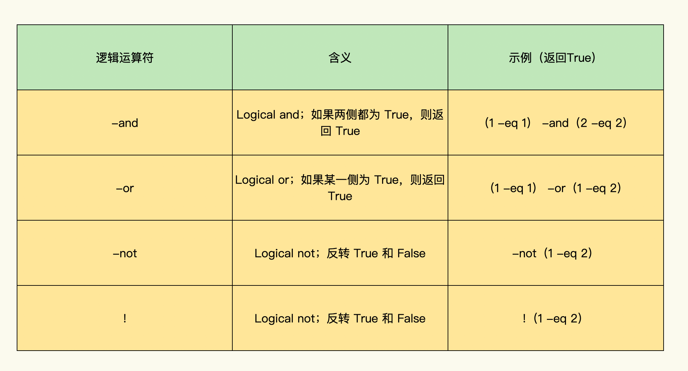

- 00 导读 入门Python的必备知识.md.html
- 00 开篇词 重复工作这么多，怎样才能提高工作效率？.md.html
- 01 拆分与合并：如何快速地批量处理内容相似的Excel？.md.html
- 02 善用Python扩展库：如何批量合并多个文档？.md.html
- 03 图片转文字：如何提高识别准确率？.md.html
- 04 函数与字典：如何实现多次替换.md.html
- 05 图像处理库：如何实现长图拼接？.md.html
- 06 jieba分词：如何基于感情色彩进行单词数量统计？.md.html
- 07 快速读写文件：如何实现跨文件的字数统计？.md.html
- 08 正则表达式：如何提高搜索内容的精确度？.md.html
- 09 扩展搜索：如何快速找到想要的文件？.md.html
- 10 按指定顺序给词语排序，提高查找效率.md.html
- 11 通过程序并行计算，避免CPU资源浪费.md.html
- 12 文本处理函数：三招解决数据对齐问题.md.html
- 13 Excel插件：如何扩展Excel的基本功能？.md.html
- 14 VBA脚本编程：如何扩展Excel，实现文件的批量打印？.md.html
- 15 PowerShell脚本：如何实现文件批量处理的自动化？.md.html
- 16 循环与文件目录管理：如何实现文件的批量重命名？.md.html
- 17 不同操作系统下，如何通过网络同步文件？.md.html
- 18 http库：如何批量下载在线内容，解放鼠标（上）？.md.html
- 19 http库：如何批量下载在线内容，解放鼠标（下）？.md.html
- 20 不同文件混在一起，怎么快速分类？.md.html
- 21 SQLite文本数据库：如何进行数据管理（上）？.md.html
- 22 SQLite文本数据库：如何进行数据管理（下）？.md.html
- 23 怎么用数据透视表更直观地展示汇报成果？.md.html
- 24 条形、饼状、柱状图最适合用在什么场景下？.md.html
- 25 图表库：想要生成动态图表，用Echarts就够了.md.html
- 26 快速提取图片中的色块，模仿一张大师的照片.md.html
- 27 zipfile压缩库：如何给数据压缩&加密备份？.md.html
- 28 Celery库：让计算机定时执行任务，解放人力.md.html
- 29 网络和邮件库：定时收发邮件，减少手动操作.md.html
- 30 怎么快速把任意文件格式转成PDF，并批量加水印？.md.html
- 春节特别放送1 实体水果店转线上销售的数据统计问题.md.html
- 春节特别放送2 用自顶至底的思路解决数据统计问题.md.html
- 春节特别放送3 揭晓项目作业的答案.md.html
- 结束语 和我一起成为10X效率职场人.md.html
- 捐赠
15 PowerShell脚本：如何实现文件批量处理的自动化？
你好，我是尹会生。
在工作中，会遇到和Windows操作系统紧密结合又需要批量操作的工作需求，比如文件的批量重命名，还有按照扩展名搜索文件。那么今天这节课，我将给你介绍一个主要应用于Windows操作系统自动化的脚本–PowerShell。
你肯定会有疑问，为什么我们不用Python，而是要另外学习PowerShell脚本呢？原因就在于，遇到这类工作需求，PowerShell脚本会比Python功能更强大，使用更方便，学习起来也更容易。
首先，Windows的所有操作，都有对应的PowerShell操作，可以达到办公自动化的目标。而使用Python，会因为Windows没有提供接口，有些功能就不能完全实现，或者有些操作还需要手动执行。
其次，PowerShell的语法简洁，比Python更加友好，降低了你阅读代码的难度。这一点你在这节课我讲解的例子中会有更深刻的体会。
最后，PowerShell在Windows上能做到开箱即用，安装完成后就可以正常运行了。而Python还需要安装解释器和配置环境。比如在金融和证券领域中，基于公司的规定，你可能无法安装操作系统之外的软件，这时候PowerShell的优势就体现出来了。
什么是PowerShell？
PowerShell是开源的终端命令解释器，之所以被称作解释器，是因为它会把用户输入的命令翻译给操作系统去执行，也能把操作系统执行的结果返回给用户。
作为PowerShell的初学者，你刚开始理解起来会有点难度，不过别担心，我举个例子你就明白了。
比如，在商场中的娃娃机，你需要通过对摇杆的控制来移动爪子的位置，抓取想要的礼物，因为你自己是没法直接移动爪子的。那么把你移动摇杆的操作翻译成爪子移动操作的功能，这就是解释器。
为了强化你对PowerShell的理解，我再把使用PowerShell前后的情况给你做个对比。
Windows操作系统在日常工作中，我们会采用图形界面（GUI）进行各类办公操作。在没有使用PowerShell的时候，如果我要想添加、删除、修改用户，就得点击各种按钮、选择下拉菜单、鼠标右键点击用户图标。
想象一下，如果我给100个新员工创建账户，创建一个账户需要5分钟，那仅仅在用户添加这一个操作上，我就需要花费500分钟，效率是不是很低？
但是利用PowerShell，就可以自动化完成用户添加这一重复性的操作了。
从Windows Server 2012版本（一听就是个很古老的操作系统版本）开始，所有的GUI操作就完全可以基于PowerShell实现了。这意味着，你能用GUI界面实现Windows操作系统中的所有功能。
你看，微软已经给了我们这么现成的自动化工具，所以我们可以放心大胆地把Windows操作系统上的重复操作，都交给PowerShell，提高工作效率。像这些和Windows操作系统紧密结合又需要批量操作的工作需求，都是PowerShell最适用的工作场景。
那么接下来，我就以Windows中最常用的文件管理为例，为你讲解一下PowerShell如何对文件进行批量处理。
怎样使用PowerShell实现文件批量处理？
在对文件的批量处理中，我们经常会遇到两类场景。
- 文件夹下的文件按照某一规则批量重命名。比如，为了项目文件名称工整，需要批量给文件夹/文件按照某些规律进行重命名。
- 将符合多个条件的扩展名从大量文件中找出来。比如，为了找到outlook里附件中的所有的压缩包，你需要使用搜索功能，一次性查找包含.zip .rar .7z多个扩展名的文件。
接下来就以文件批量的重命名，来为你讲解一下用Powershell怎么实现。
一行代码，实现文件批量重命名
使用PowerShell脚本实现文件的批量重命名，我们只需要一行代码。不过在这一行代码中，需要你掌握的PowerShell的概念比较多。所以我会通过一个案例，帮助你在学习的同时也能迅速掌握、内化。
首先我通过一行代码创建了10个文本文件，创建的PowerShell脚本是：
foreach($num in (1..10)) { New-Item $num".txt" -type file }
通过这行脚本，我在当前目录下创建了名字为“1.txt-10.txt”这样10个文件。由于批量改名操作也会用到类似的语法，所以我先给你详细讲解一下批量创建文件的脚本。这个脚本包含了循环、变量和命令三个部分。
第一个部分，是我在脚本中使用的foreach的循环功能。
循环的运行次数由in关键字后面的次数确定，这里我为了创建10个文本文件，就使用了“1..10”的形式来产生1到10这十个数字，这样的话，foreach就会执行10次，而每一次循环num变量都会得到一个新的数字，并在foreach循环体“{ }”中被New-Item项执行一次。
第二个需要你掌握的部分叫做自定义变量。
在PowerShell中，变量名都是以”\(”开头的，剩余字符可以是字母、数字和下划线等任意字符。并且PowerShell的变量名是不区分大小写的，比如“\)num”和“\(NUM”都表示相同的变量。我在代码中使用了“\)num”自定义变量来记录每次循环的数字。
第三个需要掌握的部分叫做命令。
PowerShell的命令有三种类型，例如New-Item叫做Cmdlet类型， foreach()叫做工作流类型，还有PowerShell内置的函数和自定义函数类型。这三种命令类型有一个共同的特点，就是都能被PowerShell执行。那么为了讲解方便，我在这节课中把这三种命令类型统称为“命令”。
在代码中，“New-Item”命令用来创建新的文本文件。我在创建时使用了两个参数，第一个参数“$num”.txt””用来指定文件名，文件名为num变量和字符串“.txt”连接后的名字。第二个参数“-type”用来指定创建的类型是文件（而非文件夹）。
PowerShell的脚本编写完成之后，接下来我们就需要运行它。
它的执行方式非常简单。在Windows中使用快捷键“win+R”可以弹出运行界面，在运行界面输入“powershell”之后再按回车，便会弹出PowerShell的交互界面，此时我们只需要把代码输入到交互界面就行了。
如果你希望脚本内容能多次运行，你就可以把脚本保存为以“ps1”作为扩展名的文件中。例如，我可以把创建10个文件的脚本保存到“newtxt.ps1”文件中，反复执行时，可以进入PowerShell交互界面，并输入“.\路径\newtxt.ps1”来运行它。
我把执行的命令和结果截图，贴在下方供你参考。

创建了10个文本文件后，我想把它们统一进行改名，新的名字是“new_数字_new.txt”，即在这10个文件的文件名前后，都增加“new”字符串，改名之后的格式如下图：

我把批量改名的代码从截图中单独拿出来，来重点讲解一下其中的dir命令、管道符和Rename-Item命令及其参数，因为PowerShell就是通过管道符将多个命令组合在一起，实现批量改名的。
dir *.txt | foreach { Rename-Item $_ -NewName ("new_"+$_.BaseName+"_new.txt") }
我来带你按照代码的执行顺序，从左到右，依次讲解这行代码的主要实现逻辑。
首先，这行代码最左侧的dir命令，它的功能是在终端输出当前目录下所有文件和目录的名称。
如果你要操作的文件没有在当前目录，可以使用“cd 要访问的目录”方式进入该目录下，再使用“dir”命令查看。为了更改文本文件的名称，我需要先通过“dir *.txt”来获得当前目录下所有以“.txt”结尾的文件和目录。
接下来是这行代码中出现的“｜”，被称作管道符。就像它的名字一样，用一条管道把两个程序连接在一起。它的作用主要有两个：
- 连接两条命令，PowerShell会从左到右依次执行。如果左侧程序没有执行完成，右侧程序则会进入阻塞状态，等待左侧程序执行完成后再执行。
- 把左侧命令的执行（输出）结果，通过管道，作为右侧程序的输入。在这行代码中，“dir”命令的输出，会通过管道符成为“Rename-Item”命令的输入，再通过foreach循环，实现对每个文本文件进行重命名的操作。
最后，我们来学习一下“Rename-Item”命令和它的参数。和“New-Item”一样，“Rename-Item”也是PowerShell独有的Cmdlet类型命令，它的功能是实现文件的改名。
PowerShell中一共有9个与“Item”相关的Cmdlet，你可以使用下面的命令获得所有的命令和它的帮助。
PS> Get-Command -Noun Item
CommandType Name Definition
----------- ---- ----------
Cmdlet Clear-Item Clear-Item [-Path] <String[]...
Cmdlet Copy-Item Copy-Item [-Path] <String[]>...
Cmdlet Get-Item Get-Item [-Path] <String[]> ...
Cmdlet Invoke-Item Invoke-Item [-Path] <String[...
Cmdlet Move-Item Move-Item [-Path] <String[]>...
Cmdlet New-Item New-Item [-Path] <String[]> ...
Cmdlet Remove-Item Remove-Item [-Path] <String[...
Cmdlet Rename-Item Rename-Item [-Path] <String>...
Cmdlet Set-Item Set-Item [-Path] <String[]> ...
“Item”被官方文档翻译为“项”，你可以和我一样，把它们理解为要操作的对象，通过上面这些Cmdlet命令，就可以实现这些“项”的增删改查。当你需要改名，就可以用“Rename-Item” Cmdlet来实现。
我们了解了“Rename-Item”命令的功能后，再继续学习它的参数格式和内容。它的参数格式是： “Rename-Item 旧的文件名 -NewName 新的文件名”。我在代码中使用了这样一行命令对文件名称进行了修改：
Rename-Item $_ -NewName ("new_"+$_.BaseName+"_new.txt")
在“Rename-Item”命令的参数中，你需要关注“$_”这个内置变量。它的功能是表示当前对象。在我们的例子中，它表示foreach每次循环时，通过“｜”传入的文件名称。
不过当你需要改名时，还有另外一种方法，那就是使用“\(_.BaseName”来获得文件(不包含扩展名的)基本名称，以及通过“\)_.extension”来获得扩展名。例如：“10.txt”文件的基本名称是“10”，扩展名是“.txt”。当我把“10.txt”赋值给“\(_”之后，就可以使用“\)_.BaseName”取得基本名称“10”，使用“$_.extension”取得扩展名“.txt”。
在“Rename-Item”命令的参数“(“new_”+$_.BaseName+”_new.txt”)”，这部分代码中，除了提取了“10.txt”的基本名称“10”之外，我还利用“+”符号把”new”字符串和基本名称“10”连接，形成新的文件名“new_10_new.txt”字符串。也就是说，把将、新的字符串作为“Rename-Item”的参数，就实现了文件重命名。
在这里有一点需要你注意，“\(\_”从PowerShell3.0版本开始，就可以使用“\)PSItem”
替代“\(_”，虽然“\)PSItem”在阅读上更加友好，但“\(_”能够向后兼容，而且输入的内容更少。所以我会更推荐你使用“\)_”。
通过对批量改名代码的例子与分析，你会发现虽然只有一行代码，但是其中包含了内置变量、循环、管道和重命名命令等功能的组合，PowerShell就是这样一种简洁而功能强大的脚本语言。
为了让你能对PowerShell更加得心应手，我再为你讲解一个利用同样逻辑，就可以实现的场景：从一个文件夹找到.zip和.rar扩展名的文件，带你来一起看一下怎么使用PowerShell一行命令，来按扩展名搜索文件。
按扩展名搜索文件怎么实现
当工作时间久了，你会发现自己的Outlook文件夹里有海量的附件，特别是压缩包占用空间非常大。如果我们逐一搜索，就会像大海捞针一样，找到自己想要的文件非常困难。那么此时，我们就可以按照扩展名通过一行脚本将它们全部找出来进行备份或整理到新的文件夹中。
要想实现按扩展名搜索文件，我们需要继续利用“dir”命令来取得当前目录下所有文件，以及利用“$_.extension”来取得文件的扩展名。
所以我首先使用如下命令，来获取当前目录下的扩展名都有哪些，便于接下来的搜索和查找。
dir | foreach{$_.extension} | Get-Unique
执行结果
.txt
.zip
.rar
这行代码会把当前目录下所有文件的扩展名显示出来，为了避免重复的扩展名会影响我后续的脚本编写，那么在这里，我使用了“Get-Unique”命令，把相同的扩展名去重，只保留一个。
代码的执行过程依然是从左向右依次执行。
- 首先，通过“dir”命令获取当前目录下所有的文件名称，把所有的文件名称作为“foreach”循环的输入，赋值给“$_”。
- 然后再通过“$_.extension”取得每个文件的扩展名，之后进行输出，再次通过管道符，作为“Get-Unique”命令的输入。
- 最后，“Get-Unique”会把所有扩展名作为输入处理，输出不重复的扩展名。
通过观察所有扩展名的脚本执行结果，确定要搜索的目录中，包含了我们需要的“.zip”和“.rar”之后，我们再取出符合扩展名的文件名称。为了实现这一功能，我们还需要使用一个新的命令：“Where-Object”。
“Where-Object”也是Cmdlet类型的命令，它的用法是对管道中的每个对象进行筛选，把不符合条件的对象删除。那怎么判断管道中的对象是否符合条件呢？依据就是“Where-Object”命令后面“{}”中的参数。
“{}”中可以使用命令、也可以使用比较运算符。如果“{}”中使用命令，且命令执行结果为True，则“Where-Object”会保留对象进行输出或传入后续的管道，如果命令结果为False，则删除对象。
此外，如果“{}”中使用了比较运算符，就根据比较运算符的结果对对象进行相应操作。同命令结果一样，如果为True，则保留对象；如果为False，则删除对象。
比较运算符一共有10个，它是以“-”开头，跟着运算符名称，运算符的名称是大于、等于、小于的首字母缩写，我把比较运算符整理成表格，供你参考：

为了便于你理解比较运算符，我通过一个例子，来给你讲解怎么搜索“.zip”扩展名的文件。
dir | Where-Object{ $_.extension -eq ".zip" }
在这段代码中，我使用了“-eq”比较运算符，实现了文件扩展名是否和“.zip”字符串相等的判断。
脚本通过dir命令可以获得当前目录下所有的文件，再通过“Where-Object”命令，依次对管道中的对象进行判断。如果扩展名为“.zip”则比较的结果为True，“Where-Object”命令执行完成后，PowerShell会在终端显示该文件名称，否则就会删除该对象，不在终端进行显示。
如果你还需要对文件大小、文件名称相似性等其他方式比较，可以参考比较运算符表格进行实现。
我们实现了单个扩展名的搜索之后，再来让这一行脚本的功能继续增强，让它能搜索多个扩展名。
为了同时搜索到“.zip”和“.rar”文件，我们需要引入逻辑运算符。在“Where-Object”命令的参数中，使用逻辑运算符，然后根据它两侧的执行结果是否为True，实现对扩展名的组合判断。例如下面的脚本：
dir | Where-Object{ ($_.extension -eq ".zip" ) -or ($_.extension -eq ".rar" ) }
这行代码，过滤了管道中文件的扩展名是否包含“.zip”或者包含“.rar”。我在代码中使用的“-or”逻辑运算符的含义是，它的两侧扩展名和“.zip”、“.rar”任意一个相等，返回结果就是True，“Where-Object”命令就会把文件名称打印到屏幕上，如果返回的结果为False，对象仍然会被删除掉。
标准逻辑运算符我也为你整理了一个表格，你可以参考。

总结来说，通过增加逻辑运算符，我们就能实现对多个扩展名的搜索功能。
小结
最后我来为你做个总结，我通过批量改名和按多个扩展名搜索文件这两个例子，为你展示了PowerShell脚本的命令和管道。
命令中的Cmdlet类型能够支持Windows中所有的对象，其中对文件操作最常用的四个Cmdlet类型命令是：New-Item、Rename-Item、Where-Object和Get-Unique。它们也是我在这节课中为你着重介绍的命令。在PowerShell中，你掌握的Cmdlet越多，能够实现的功能就越强大，因此，我把官方文档地址提供给你，你可以通过扩展学习，掌握更多的Cmdlet命令。
此外，命令中的工作流类型可以实现循环，我在这节课给你介绍了foreach循环，通过foreach就可以实现批量操作，优化办公效率。
不过在你掌握了足够多的命令后，还需要掌握管道符。因为通过管道符能够连接命令，让命令可以按顺序执行，而通过对命令的组合，就可以实现多个命名的自动化运行，今儿实现Windows操作系统相关操作的自动化。
思考题
按照惯例，我来为你留一道思考题，你能否通过官方文档查找到删除项的命令，并实现“.txt”扩展名文件的批量删除？请你大胆尝试一下。
© 2019 - 2023 Liangliang Lee. Powered by gin and hexo-theme-book.